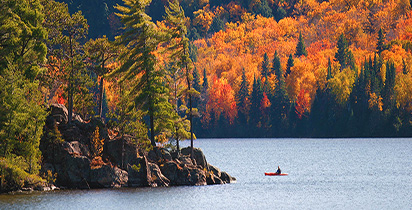

Fall is an idyllic time to take a romantic getaway at the Couples Resort and visit Algonquin Park, Muskoka. Summer has given way to brisk, invigorating autumn air. Fall days remain long, making it comfortable to stay outside for long periods and to enjoy perfect walking and hiking conditions on an endless system of trails. Nothing says Fall more than fall colors in Algonquin Park, which is known to have some of the most brilliant changes of season throughout Ontario. Considered a Signature Canadian Experience bringing visitors from around the world, who are attracted by the outstanding fall colour viewing opportunities, but there are many other things to see and do.
Wherever you plan to roam this fall, make it especially romantic by taking advantage of one of our fall packages designed for couples in love. The fall colors alone make a trip to Algonquin-Muskoka worthwhile, especially if you catch the spectacular colors of the sugar and red maples from the 20th of September to mid-October. Then, the yellow aspens, golden tamaracks, and red oaks reach their peak shortly after, creating another vivid display before giving way to a more subdued November. Live Algonquin Park webcam Mid-September to mid-October is the prime time to view the flaming red maple, deep yellow poplar, and white-barked birch tree leaves. These colors become the backdrop for touring artisan studios, enjoying fall photography workshops, and hunting for great antiques. Clothing rentals We have outdoor clothing to keep you warm and dry, including 100% windproof and waterproof pants and jackets with polar fleece interiors, we recommend that you bring good hiking shoes.
During late fall, you have a great chance of spotting a large bull
moose, now with full-grown, polished antlers ready for the
rutting (mating) season—remember to give them plenty of space.
Fall evenings are also ideal for wolf howling; you might even try it yourself.
Algonquin Visitor Centre and Logging Museum
Algonquin Park's two museums, the Visitor Centre and Logging Museum,
are open daily (check the Events Calendar for specific dates and hours).
They provide park information along with fascinating natural and cultural
history exhibits.
Autumn Studio Tours
Fall studio tours highlight rural artists.
Visit the studio tour website for maps and more details.
Gertrud Sorensen Landscape Artist Gallery - On-site, most days from 10 am
Madawaska Valley Studio Tour
Muskoka Studio Tour
Bancroft Studio Tour
The Studio Tour Haliburton Highlands
Enjoy a free leisurely tour along the shores of Galeairy Lake and take
in the beauty of Algonquin. Take the 4 hour paddle round trip and
explore our waterfall. Or spend few hours fishing for Trout, Bass,
Pickerel.
We have extensive collection of all weather clothing, fishing
gear, outerwear, footwear, hats and accessories & apparel.
Most equipment is free for details and specials check out
Packages Page for more information.
14 foot Aluminum Fishing Boat with 8 hpr Motor
14 foot
Aluminum, Steering Wheel Operated, 20 hpr
16 foot Aluminum,
Steering Wheel Operated, 30 hpr
14 foot with 40 hp Honda Motor
- 2 asphalt regulation-size Pickleball courts with all the racquets
and balls provided
- 1 asphalt regulation-size tennis court with all the racquets
and balls provided
- 1 asphalt court for playing basketball
- 1 asphalt regulation-size badminton court with all the
racquets and birdies provided
Rugged surroundings can compel you to mount up on your own trail horse
and go on a guided trail ride. For those with an appetite for the
outback, grab your old jeans and head off into the wilderness. There
is nothing quite like exploring the Algonquin wilderness on horseback
https://ridethewilderness.com/
An important form of transportation for the Algonquin natives
has always been the use of canoes on the beautiful lakes and rivers.
Canoes and kayaks permit you to travel deep into Algonquin Park on our
Galeairy Lake still as pristine as ever.
Inquire at Sport Centre to go out super early next day (as early as
sunrise)
Bike maps for four trails. Each of the trails are rated easy for all
to enjoy.
Madawaska River trail which is endless this trail follows abandoned
railway bed, biking along the serene Madawaska River, this trail
will take you all the way to Madawaska and then you can return via
Hwy 60 to complete a 40 km loop. But prepare for hills which may be
a challenge on the highway and a paved shoulder for only part of
your ride.
The old Abandoned Railway Line trail which will take you into
Algonquin Park and the Lobster Lake Trail which is an old loggers
road and the Hydro Line trail.
Resort scenic lookout trail starts next to our museum and
continues for 2.7 km or take one of the many trails located in
Algonquin Park.
Trail Map & Directions Available from sport center or front desk. Several trails within Algonquin Park
Algonquin Park's interpretive walking trails are available for day hiking outings. Each trail is designed to explore a different aspect of Algonquin and each has a trail guide booklet which is available on-line or through The Friends of Algonquin Park Bookstores. Trails are open year-round, but trail guide booklets are available at trail heads from late spring to early fall.